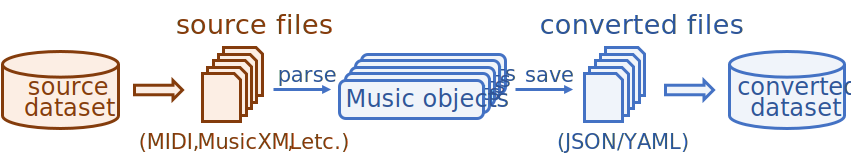
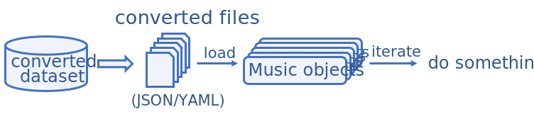

Datasets¶
MusPy provides an easy-to-use dataset management system. Each supported dataset comes with a class inherited from the base MusPy Dataset class. MusPy also provides interfaces to PyTorch and TensorFlow for creating input pipelines for machine learning. Here is an example of preparing training data in the piano-roll representation from the NES Music Database using MusPy.
import muspy
# Download and extract the dataset
nes = muspy.NESMusicDatabase("data/nes/", download_and_extract=True)
# Convert the dataset to MusPy Music objects
nes.convert()
# Iterate over the dataset
for music in nes:
do_something(music)
# Convert to a PyTorch dataset
dataset = nes.to_pytorch_dataset(representation="pianoroll")
Iterating over a MusPy Dataset object¶
Here is an illustration of the two internal processing modes for iterating over a MusPy Dataset object.
 {kind=link}
{kind=link}
{kind=link}
Supported Datasets¶
Here is a list of the supported datasets.
Dataset |
Format |
Hours |
Songs |
Genre |
Melody |
Chords |
Multitrack |
|---|---|---|---|---|---|---|---|
Lakh MIDI Dataset |
MIDI |
>5000 |
174,533 |
misc |
* |
* |
* |
MAESTRO Dataset |
MIDI |
201.21 |
1,282 |
classical |
|||
Wikifonia Lead Sheet Dataset |
MusicXML |
198.40 |
6,405 |
misc |
O |
O |
|
Essen Folk Song Dataset |
ABC |
56.62 |
9,034 |
folk |
O |
O |
|
NES Music Database |
MIDI |
46.11 |
5,278 |
game |
O |
O |
|
Hymnal Tune Dataset |
MIDI |
18.74 |
1,756 |
hymn |
O |
||
Hymnal Dataset |
MIDI |
17.50 |
1,723 |
hymn |
|||
music21’s Corpus |
misc |
16.86 |
613 |
misc |
* |
* |
|
Nottingham Database |
ABC |
10.54 |
1,036 |
folk |
O |
O |
|
music21’s JSBach Corpus |
MusicXML |
3.46 |
410 |
classical |
O |
||
JSBach Chorale Dataset |
MIDI |
3.21 |
382 |
classical |
O |
(Asterisk marks indicate partial support.)
Base Dataset Classes¶
Here are the two base classes for MusPy datasets.
-
class
muspy.Dataset[source] Base class for all MusPy datasets.
To build a custom dataset, it should inherit this class and overide the methods
__getitem__and__len__as well as the class attribute_info.__getitem__should return thei-th data sample as amuspy.Musicobject.__len__should return the size of the dataset._infoshould be amuspy.DatasetInfoinstance containing the dataset information.
-
class
muspy.RemoteDataset(root, download_and_extract=False, cleanup=False)[source] Base class for remote MusPy datasets.
This class is extended from
muspy.Datasetto support remote datasets. To build a custom dataset based on this class, please refer tomuspy.Datasetfor the docmentation of the methods__getitem__and__len__, and the class attribute_info. In addition, the class attribute_sourcescontaining the URLs to the source files should be properly set (see Notes).-
root Root directory of the dataset.
- Type
str or Path
- Parameters
download_and_extract (bool, optional) – Whether to download and extract the dataset. Defaults to False.
cleanup (bool, optional) – Whether to remove the original archive(s). Defaults to False.
:raises RuntimeError:: If
download_and_extractis False but file{root}/.muspy.successdoes not exist (see below).Important
muspy.Dataset.exists()depends solely on a special file named.muspy.successin the folder{root}/, which serves as an indicator for the existence and integrity of the dataset. This file will automatically be created if the dataset is successfully downloaded and extracted bymuspy.Dataset.download_and_extract().If the dataset is downloaded manually, make sure to create the
.muspy.successfile in the folder{root}/to prevent errors.Notes
The class attribute
_sourcesis a dictionary containing the following information of each source file.filename (str): Name to save the file.
url (str): URL to the file.
archive (bool): Whether the file is an archive.
md5 (str, optional): Expected MD5 checksum of the file.
Here is an example.:
_sources = { "example": { "filename": "example.tar.gz", "url": "https://www.example.com/example.tar.gz", "archive": True, "md5": None, } }
See also
muspy.DatasetThe base class for all MusPy datasets.
-
Local Dataset Classes¶
Here are the classes for local datasets.
-
class
muspy.FolderDataset(root, convert=False, kind='json', n_jobs=1, ignore_exceptions=False, use_converted=None)[source] A class of datasets containing files in a folder.
Two modes are available for this dataset. When the on-the-fly mode is enabled, a data sample is converted to a music object on the fly when being indexed. When the on-the-fly mode is disabled, a data sample is loaded from the precomputed converted data.
-
root Root directory of the dataset.
- Type
str or Path
- Parameters
convert (bool, optional) – Whether to convert the dataset to MusPy JSON/YAML files. If False, will check if converted data exists. If so, disable on-the-fly mode. If not, enable on-the-fly mode and warns. Defaults to False.
kind ({'json', 'yaml'}, optional) – File format to save the data. Defaults to ‘json’.
n_jobs (int, optional) – Maximum number of concurrently running jobs in multiprocessing. If equal to 1, disable multiprocessing. Defaults to 1.
ignore_exceptions (bool, optional) – Whether to ignore errors and skip failed conversions. This can be helpful if some of the source files is known to be corrupted. Defaults to False.
use_converted (bool, optional) – Force to disable on-the-fly mode and use stored converted data
Important
muspy.FolderDataset.converted_exists()depends solely on a special file named.muspy.successin the folder{root}/_converted/, which serves as an indicator for the existence and integrity of the converted dataset. If the converted dataset is built bymuspy.FolderDataset.convert(), the.muspy.successfile will be created as well. If the converted dataset is created manually, make sure to create the.muspy.successfile in the folder{root}/_converted/to prevent errors.Notes
This class is extended from
muspy.Dataset. To build a custom dataset based on this class, please refer tomuspy.Datasetfor the docmentation of the methods__getitem__and__len__, and the class attribute_info.In addition, the attribute
_extensionand methodreadshould be properly set._extensionis the extension to look for when building the dataset. All files with the given extension will be included as source files.readis a callable that takes as inputs a filename of a source file and return the converted Music object.See also
muspy.DatasetThe base class for all MusPy datasets.
-
-
class
muspy.MusicDataset(root, kind='json')[source] A local dataset containing MusPy JSON/YAML files in a folder.
-
root Root directory of the dataset.
- Type
str or Path
-
kind File format of the data. Defaults to ‘json’.
- Type
{‘json’, ‘yaml’}, optional
-
-
class
muspy.ABCFolderDataset(root, convert=False, kind='json', n_jobs=1, ignore_exceptions=False, use_converted=None)[source] A class of local datasets containing ABC files in a folder.
Remote Dataset Classes¶
Here are the classes for remote datasets.
-
class
muspy.RemoteFolderDataset(root, download_and_extract=False, cleanup=False, convert=False, kind='json', n_jobs=1, ignore_exceptions=False, use_converted=None)[source] A class of remote datasets containing files in a folder.
This class extended
muspy.RemoteDatasetandmuspy.FolderDataset. Please refer to their documentation for details.-
root Root directory of the dataset.
- Type
str or Path
- Parameters
download_and_extract (bool, optional) – Whether to download and extract the dataset. Defaults to False.
cleanup (bool, optional) – Whether to remove the original archive(s). Defaults to False.
convert (bool, optional) – Whether to convert the dataset to MusPy JSON/YAML files. If False, will check if converted data exists. If so, disable on-the-fly mode. If not, enable on-the-fly mode and warns. Defaults to False.
kind ({'json', 'yaml'}, optional) – File format to save the data. Defaults to ‘json’.
n_jobs (int, optional) – Maximum number of concurrently running jobs in multiprocessing. If equal to 1, disable multiprocessing. Defaults to 1.
ignore_exceptions (bool, optional) – Whether to ignore errors and skip failed conversions. This can be helpful if some of the source files is known to be corrupted. Defaults to False.
use_converted (bool, optional) – Force to disable on-the-fly mode and use stored converted data
See also
muspy.RemoteDatasetBase class for remote MusPy datasets.
muspy.FolderDatasetA class of datasets containing files in a folder.
-
-
class
muspy.RemoteMusicDataset(root, download_and_extract=False, cleanup=False, kind='json')[source] A dataset containing MusPy JSON/YAML files in a folder.
This class extended
muspy.RemoteDatasetandmuspy.FolderDataset. Please refer to their documentation for details.-
root Root directory of the dataset.
- Type
str or Path
-
kind File format of the data. Defaults to ‘json’.
- Type
{‘json’, ‘yaml’}, optional
- Parameters
download_and_extract (bool, optional) – Whether to download and extract the dataset. Defaults to False.
cleanup (bool, optional) – Whether to remove the original archive(s). Defaults to False.
-
-
class
muspy.RemoteABCFolderDataset(root, download_and_extract=False, cleanup=False, convert=False, kind='json', n_jobs=1, ignore_exceptions=False, use_converted=None)[source] A class of remote datasets containing ABC files in a folder.